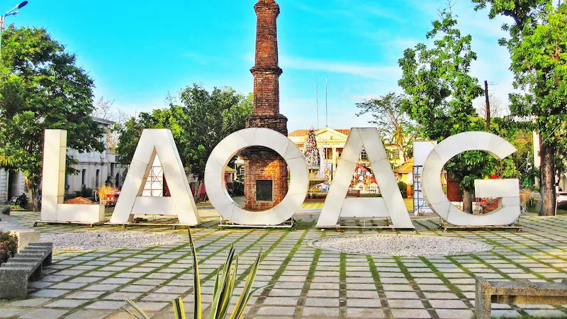

Laoag City if the placed where my mission home is located. It is my favorite city. Laoag City is also known as the Sunshine City, in its pronounciation Laoag in English is light. It is the vibrant capital of Ilocos Norte in the northern Philippines. It offers a unique blend of history, culture, and natural beauty, makit it a must-visit destination. Travelers can explore the centuries-old St. Williams's Cathedral and its famous sinking bell tower, stroll through heritage sites that reflect the Spanish colonial ere, and enjoy the golden sand dunes perfect for thrilling 4x4 rides and sandboarding. With its rich Ilocano cuisine, warm hospitality, and sceneic coastal views, Laoag City is an ideal place for those seeking both adventure and a taste of authentic Filipino heritage.
